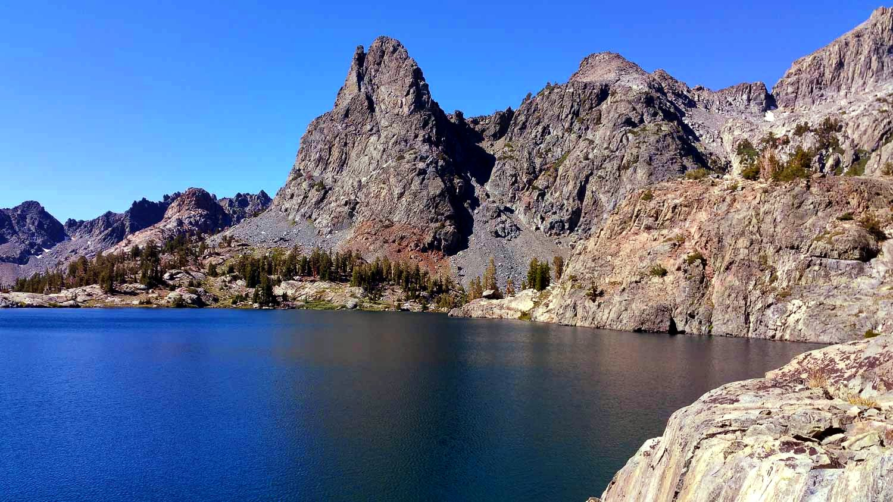
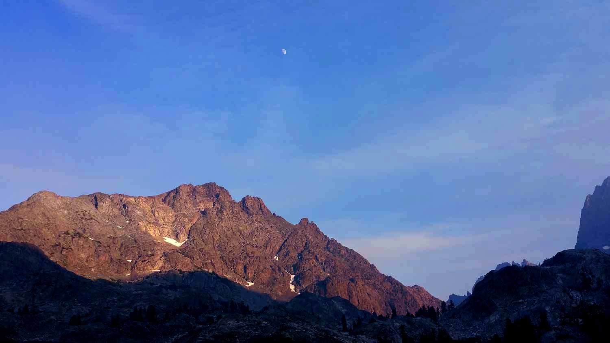

Ansel Adams Wilderness - July 2015
Route: Devils Postpile -> Minaret Lake -> Cecile Lake -> Iceberg Lake -> Ediza Lake -> Agnew Meadows. My first real trip in the Sierra!
Day 1:
We took the shuttle from Mammoth Lakes to Devils Postpile and got quite a late start! The elevation gain of like ~1500 feet did not feel good!
{kind=link}
Cute!


First view of the minarets, late afternoon
We camped at Minaret Lake that night, very beautiful!
Day 2:
Next morning, we got some nice light on the minarets!
{kind=link}
After a small stretch of use trail following the edge of the lake, there was a faint path that left the northern tip of the left half of Minaret Lake and contoured westwards. It went up into a small cirque, and we scrambled up the north side of the cirque into a small bowl about 100 meters east of Cecile Lake.

{kind=link}
Michael Minaret?

Happy boy!


Wind on Minaret Lake
Then we traversed the south side of Cecile Lake -- flat but choked with talus! I was very young at the time, but it seemed awfully loose. We were going pretty slow, and it was pretty tiring.
{kind=link}
Clyde Minare (The class 4 route to the summit is pretty clear from the photograph)

Iceberg Lake from above
The descent from Cecile Lake to Iceberg Lake was pretty scary for me---very steep and loose in the places that people have walked a lot. It actually began a lifelong fear of descending :(
{kind=link}
{kind=link}
Ediza Lake
{kind=link}
Mt. Ritter and Mt. Banner
Ediza Lake is so beautiful! If you have the time and energy, you should take some time and explore the small valley west of the lake, towards Mt. Ritter. I did for a while, but it got dark pretty soon. (We did like only three miles that day! The off-trail work was hard and I was new to it....)
{kind=link}
Ediza Lake

{kind=link}
Volcanic Ridge

Minarets from Ediza Lake
Day 3:
Hiked out to Agnew Meadows (we were able to have a different start-end point because we took the shuttle out from Mammoth where the car was.)

A few miles east of Shadow Lake